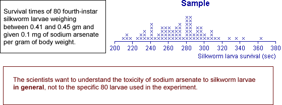

Generalising from data
Most data sets do not arise from randomly sampling individuals from a finite population. However we are still rarely interested in the specific individuals from whom data were collected.
The recorded data are often 'representative' of something more general.
The main aim is to generalise from the data.
Examples
The following data sets were collected to provide information about something more general than the specific 'individuals' from whom the values were collected.

We can (and should!) use exploratory graphical and numerical summaries to help understand the distribution of values in data sets such as these. However the data give incomplete information about the underlying process — with more data, we would be able to do better.
We need to explain more precisely what is meant by 'generalising from the data'.